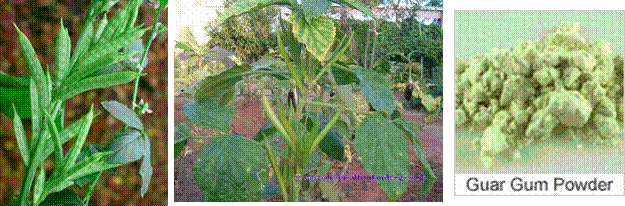

HORT 281 :: Lecture 19 :: ORIGIN, AREA, PRODUCTION, VARIETIES, PACKAGE OF PRACTICES FOR CLUSTER BEAN

Origin, area, production, varieties, package of practices for CLUSTER BEAN
(Cyamopsis tetragonoloba L.) (2n = 14)
(Hindi: Guar)
Cluster bean is a drought tolerant warm season crop grown for its tender fruits for use as vegetable. Fruits are rich in food value and each 100 g contains 10.8 g carbohydrate, 3.2 protein, 1.4 g minerals, 316 IU vitamin-A and 47 mg vitamin-C. It is also sued as a nutritious fodder for livestock. Mucilaginous seed flour is used for making guar gum (galactomannan) utilized in textile, paper, cosmetic and oil industries throughout the world.
Origin and botany

Diverse opinion on exact origin of cluster bean is still prevailing. Dry regions of West Africa as well as India are treated as centres of origin of cluster bean by various workers. African species, Cyamopsis senegalensis is the ancestor of cluster bean.
Botany
Cluster bean is an erect annual, growing to a height of up to 3 in with stiff erect branches. Stem is angled and leaves are trifoliate. Small white or purple flowers are borne on axillary racemes. Fruits are compressed, erect and 4-10 cm long. Each fruit has 5 to 12 white to grey or black coloured seeds.
Varieties
Varieties grown in India differ in height of plants. Cultivars grown in South India are vegetable types while those in North-West India are grown for seeds. There are giant and dwarf types in cluster bean. Vegetable types are mostly dwarf types with smooth appearance. Fodder types are mostly hairy.
Some of the improved varieties developed at IARI, New Delhi are :
- Pusa Domausami -Suitable for rainy season. Late and branching variety with 80 days to first picking. Pods smooth, light green and 10-13 cm long.
- Pusa Sadabahar –Suitable for summer and rainy season, non branching type. Pods green and 12-13 cm long.
- Pusa Navbahar – Non branching variety with pod quality of Pusa Mausmi. Developed by crossisng Pusa Domausami and Pusa Sadabahar.
Sharad Bahar is a branching variety developed at NBPGR. It produces 12-14 branches with an average yield of 133 pods / plant.
Climate and soil
This hardy and drought tolerant crop comes up well during summer and rainy season in well-drained sandy loam. It cannot tolerate shade and prefers long day condition for vegetative growth and short day condition for flowering.
Land preparation and sowing
Main rainy season crop is sown during June-July and extended up to September-October. Summer crop is raised by sowing during February-March. Field is prepared to a fine tilth by ploughing and harrowing. Seeds are either broadcasted or dibbled behind country plough at a distance of 25-30 cm. Seeds are also dibbled at specified spacing of 45-60 cm x 15 cm. Seed requirement is 25-30 kg/ha.
Manure and fertilizers
Though a hardy legume, cluster bean responds to fertilizer application. In addition to 25 t. of farmyard manure, a fertilizer dose of 50:60:60 kg NPK / ha is recommended. Half N, full P and K are applied as basal dose and remaining N, 25-30 days after.
Application of fertilizers in Tamil Nadu
Apply FYM 25 t, Azospirillum2 kg and Phosphobacteria 2 kg / ha, N 25, P 50 and K 25 kg/ha as basal and 25 kg N/ha 30 days after sowing.
Intercultural
The field is kept free of weeds during initial stages. Though a hardy crop, irrigation increases yield. Irrigation at flowering and fruiting stages is the most critical. For getting high yield in vegetable types, irrigation may be done at 7-10 days interval.
Stacking is also necessary to avoid lodging in tall varieties.
Harvesting and yield
Harvesting starts 40 days after sowing and pods are harvested at tender stage. A vegetable yield of 5-8 tonnes and seed yield of 0.6 to 1.0 t/ha are expected within crop duration of 120 days.
Pests and Diseases
Most of pests affecting other legume crops also attack cluster bean. Fusarium wilt, bacterial blight, powdery mildew and anthracnose are major diseases affecting the crop.
*******
1. Among the peas and beans __________is a hardy crop.
a. Peas b. Cluster bean c. Lablab beans d. French bean
2. Gaur gum is a product of ____________.
3. Cluster bean is a __________ rooted crop.
4. Spraying of __________@ 2000 ppm would increase the yield of cluster bean.
a. GA b. CCC c. IAA d. NAA
5. Other name for cluster bean is ________________.
| Download this lecture as PDF here |